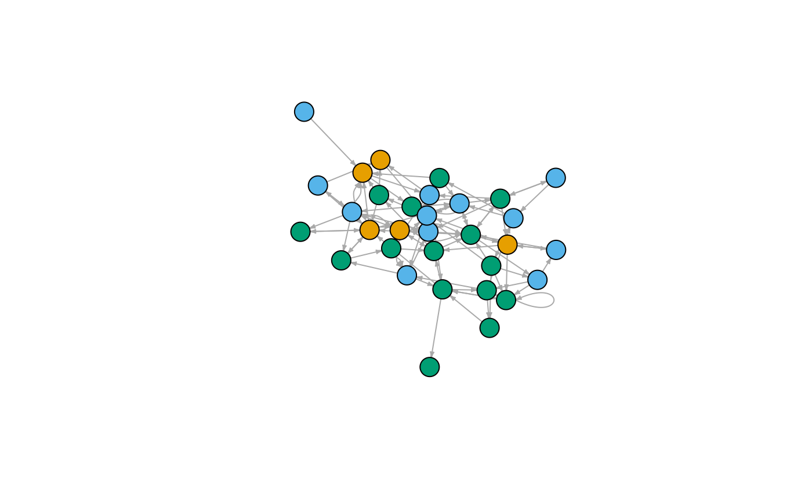
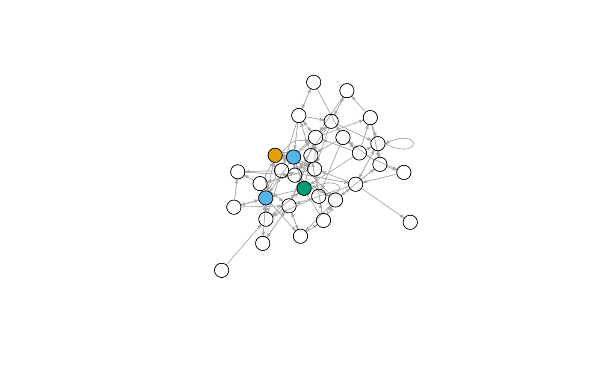

First, load the metapaths package, as well as other requisite packages.
# load packages
library(metapaths)
library(data.table)
library(magrittr)
# for comparison and visualization
library(igraph)
#>
#> Attaching package: 'igraph'
#> The following objects are masked from 'package:stats':
#>
#> decompose, spectrum
#> The following object is masked from 'package:base':
#>
#> unionPrint the example dataset.
mtcars_node_list = mtcars_edge_list[, .(Origin, OriginType)] %>%
rbind(mtcars_edge_list[, .(Destination, DestinationType)], use.names = F) %>%
unique() %>%
setnames(c("Node", "NodeType"))
head(mtcars_node_list)
#> Node NodeType
#> 1: Porsche 914-2 Five
#> 2: Lotus Europa Five
#> 3: Merc 450SLC Three
#> 4: Merc 280 Four
#> 5: Datsun 710 Four
#> 6: Honda Civic Four
head(mtcars_edge_list)
#> Origin Destination OriginType DestinationType
#> 1: Porsche 914-2 Merc 230 Five Four
#> 2: Lotus Europa Fiat 128 Five Four
#> 3: Merc 450SLC Valiant Three Three
#> 4: Merc 280 Duster 360 Four Three
#> 5: Datsun 710 Toyota Corolla Four Four
#> 6: Honda Civic Volvo 142E Four FourVisualize the network as a graph.
mtcars_graph = graph.data.frame(mtcars_edge_list, vertices = mtcars_node_list, directed = T)
mtcars_col = factor(V(mtcars_graph)$NodeType)
plot(mtcars_graph, vertex.size = 15, vertex.label = NA, edge.arrow.size = .25, vertex.color = mtcars_col)
Get all node types.
mtcars_types = node_types(mtcars_edge_list, verbose = T)
#> Node Types:
#> - Five
#> - Three
#> - FourRetrieve a list of unique nodes.
mtcars_nodes = all_nodes(mtcars_edge_list, verbose = T)
#> Total Node Count: 32For a given node, find all neighbors of a specified type.
get_neighbors("Cadillac Fleetwood", "Three", mtcars_edge_list) %>%
cat(sep = "\n")
#> Merc 450SLC
#> Lincoln Continental
#> Dodge Challenger
#> Merc 450SLFor a given node, find all neighbors of series of types.
get_neighbors_type("Cadillac Fleetwood", c("Three", "Four"), mtcars_edge_list)
#> [[1]]
#> [1] "Merc 450SLC" "Lincoln Continental" "Dodge Challenger"
#> [4] "Merc 450SL"
#>
#> [[2]]
#> [1] "Merc 240D"Construct the neighbor list.
mtcars_neighbor_list = get_neighbor_list(mtcars_edge_list, verbose = T)
#> Node Types:
#> - Five
#> - Three
#> - Four
#>
#> Total Node Count: 32
head(mtcars_neighbor_list)
#> Node Five
#> 1: AMC Javelin NA
#> 2: Cadillac Fleetwood Maserati Bora,Ferrari Dino
#> 3: Camaro Z28 Porsche 914-2
#> 4: Chrysler Imperial Maserati Bora
#> 5: Datsun 710 NA
#> 6: Dodge Challenger Ferrari Dino,Maserati Bora,Lotus Europa
#> Three
#> 1: Merc 450SLC
#> 2: Merc 450SLC,Lincoln Continental,Dodge Challenger,Merc 450SL
#> 3: Camaro Z28,Merc 450SE
#> 4: Dodge Challenger
#> 5: Dodge Challenger,Merc 450SE,Valiant,Toyota Corona
#> 6: Merc 450SE,Cadillac Fleetwood,Chrysler Imperial
#> Four
#> 1: NA
#> 2: Merc 240D
#> 3: Merc 240D,Mazda RX4 Wag,Fiat 128,Merc 280
#> 4: Honda Civic,Fiat 128,Merc 230,Merc 240D
#> 5: Toyota Corolla
#> 6: Fiat 128,Merc 240D,Toyota Corolla,Datsun 710Identify the neighbors using the constructed neighbor list rather than the edge list.
search_neighbors("Cadillac Fleetwood", "Three", mtcars_neighbor_list)%>%
cat(sep = "\n")
#> Merc 450SLC
#> Lincoln Continental
#> Dodge Challenger
#> Merc 450SLCompute degree stratified by node type. Here, degree is defined as the number of adjacent nodes (rather than edges).
search_degrees("Cadillac Fleetwood", "Three", mtcars_neighbor_list, "neighbor") %>%
paste("Degree:", .) %>%
cat(sep = "\n")
#> Degree: 4Compute similarity between two nodes using a sample meta-path: Three-Four-Five.
mtcars_sim = get_similarity("Camaro Z28", "Ferrari Dino",
c("Three", "Four", "Five"),
c("pc", "npc", "dwpc"),
node_list = mtcars_node_list,
neighbor_list = mtcars_neighbor_list)
#> >>> Computing Paths from Origin (Camaro Z28)
#> Step 1 (Three): 1 Path
#> Step 2 (Four): 4 Paths
#> Step 3 (Five): 6 Paths
#>
#> >>> Computing Paths from Destination (Ferrari Dino)
#> Step 1 (Five): 1 Path
#> Step 2 (Four): 2 Paths
#> Step 3 (Three): 7 Paths
#>
#> >>> Computing Similarity
#>
#> Similarity Metric: Path Count
#> X -> Y Paths: 2
#> Similarity: 2
#>
#> Similarity Metric: Normalized Path Count
#> X -> Y Paths: 2
#> X -> Type Y Paths: 6
#> Y -> Type X Paths: 7
#> Similarity: 0.153846153846154
#>
#> Similarity Metric: Degree-Weighted Path Count
#> X -> Y Paths: 2
#> Damping Exponent: 0.4
#> PDP (Mean/SD): 0.289938488846612 [0.056481552587565]
#> Similarity: 0.579876977693223Let’s inspect the output of the get_similarity() primitive. get_similarity() returns a named list. OriginPaths contains the paths from the origin node (i.e., Camaro Z28) to the destination node (i.e., Ferrari Dino) following the specified meta-path.
mtcars_sim$OriginPaths
#> Three Four Five
#> 1: Camaro Z28 Merc 240D Ferrari Dino
#> 2: Camaro Z28 Mazda RX4 Wag Ford Pantera L
#> 3: Camaro Z28 Mazda RX4 Wag Maserati Bora
#> 4: Camaro Z28 Fiat 128 Lotus Europa
#> 5: Camaro Z28 Merc 280 Ferrari Dino
#> 6: Camaro Z28 Merc 280 Porsche 914-2Similarly, DestinationPaths contains the paths from the destination node to the origin node following the reverse of the specified meta-path.
mtcars_sim$DestinationPaths
#> Five Four Three
#> 1: Ferrari Dino Merc 280 Camaro Z28
#> 2: Ferrari Dino Merc 280 Duster 360
#> 3: Ferrari Dino Merc 280 Pontiac Firebird
#> 4: Ferrari Dino Merc 240D Camaro Z28
#> 5: Ferrari Dino Merc 240D Chrysler Imperial
#> 6: Ferrari Dino Merc 240D Dodge Challenger
#> 7: Ferrari Dino Merc 240D Cadillac FleetwoodThese tables are used to compute various meta-path based similarity metrics.
head(mtcars_sim$Similarity)
#> Metric Similarity
#> 1: Path Count 2.0000000
#> 2: Normalized Path Count 0.1538462
#> 3: Degree-Weighted Path Count 0.5798770Indeed, there are two paths which connect Camaro Z28 and Ferrari Dino via the meta-path Three-Four-Five.
mtcars_sim$OriginPaths[Five == "Ferrari Dino"]
#> Three Four Five
#> 1: Camaro Z28 Merc 240D Ferrari Dino
#> 2: Camaro Z28 Merc 280 Ferrari DinoThose paths are shown on the graph below.
keep = V(mtcars_graph)$name %in% c("Camaro Z28", "Merc 240D", "Merc 280", "Ferrari Dino")
mtcars_col_rem = mtcars_col
mtcars_col_rem[!keep] = NA
plot(mtcars_graph, vertex.size = 15, vertex.label = NA, edge.arrow.size = 0, vertex.color = mtcars_col_rem)